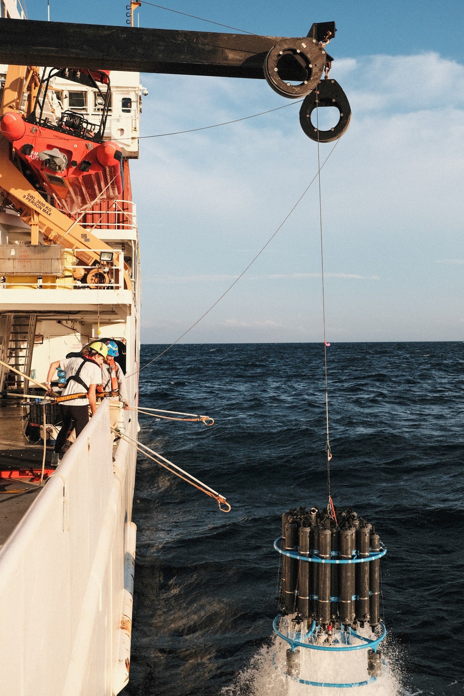

Research

Research Interests:
- Marine plankton ecology
- Phycological research - taxonomy, algal blooms, algal toxins
- Food web interactions - functional grouping & ecological niches
- Symbiotic relationships of marine plankton
Research Posters:
Roussa, L., McNeely, C., Allen, J. (2022) “Freshwater Sponges in Eastern Washington: Environmental Constraints, Species Composition, and Associated Photobionts” Joint Aquatic Sciences Meeting. Grand Rapids, MI.
Roussa, L., Keister, J., Schultz, H., Albertson, S., Krembs, C. (2021) “Measuring From the Sky: Methods to Quantify Moon Jellyfish (Aurelia labiata) Aggregations Using Aerial Photographs.” CICOES Research Poster Session, University of Washington, Seattle, WA.